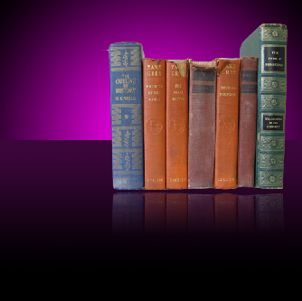

この章ではApple製品上のデザインやWEBバナーなどのデザインでよく目にする技法で、
オブジェクトが反射しているような画像を作成します。
■完成図
（※この章の課題で使用されているタイトルなどの文字列は、
後の章の「文字の使用」で学習しますので、今回は特に意識しなくても結構です。）
まずは素材フォルダ「PS04」から素材ファイル4-4-1-02.psdを開きましょう。
この画像から目的の本を選択範囲を使って抽出します。
第4章で学習した選択範囲ツールにはさまざまなものがありました。
どのツールも最終的に作成できる選択範囲はほぼ同じ様に作成できますが、
用途やデータの種類によって向き不向きなツールがあります。
どのツールがどの用途に合うのかといったことは
多くのデータに選択範囲を作成していくことで発見できるようになります。
それでは今回は中央青の本から右側の緑の本までを選択範囲で作成してみます。
今回のように本と背景の色の境がはっきりしている場合は、
下図のように[クイック選択ツール]で作成すると素早く作成することができます。
それではここで選択範囲を保存しておきましょう。
Photoshopでは選択範囲を作成した後、次の作業を行うと先に作成した選択範囲が消えてしまいます。
選択範囲を保存しておくメリットとしては、
いつでも保存した選択範囲が呼び出せるという利点があります。
それでは現状のままで、メニューバーの[選択範囲]-[選択範囲を保存]から、
下図のように「BOOK」という名前で保存しておきましょう。
保存が完了したら、[チャンネルパネル]に選択範囲が保存されていることを確認しましょう。
先ほど保存した選択範囲から別のファイルへ画像を切り取り合成します。
まずは素材フォルダ「PS04」から素材ファイル4-4-1-01.psdを開きましょう。
先程、選択範囲を保存した4-3-1-02.psdファイルで選択範囲が表示されている状態で、
【Ctrl＋Cキー】〔Command＋Cキー〕でコピーします。
コピーが完了したら、4-3-1-01.psdに戻り、
【Ctrl＋V】キー〔Command＋V〕キーでペーストしましょう。
ペーストできたらそのままメニューバーの[編集]-[自由変形]を選択し、
本の画像を下図を参考に縮小しましょう。
次に[移動ツール]に切り替えて、そのまま【Altキー】〔Optionキー〕を押しながら
本の画像をわずかに下方向にドラッグしてコピーします。
ドラッグコピーが完了したら、
メニューバーの[編集]-[変形]-[垂直方向に反転]を選択して本を垂直方向に反転します。
反転できたらそのまま下方向へ移動します。（下図参照）
ここで、課題作成の本筋とは少し離れますが、
[レイヤーパネル]を使って、描画されている領域の選択範囲を
自動的に取得する方法があります。
レイヤー操作自体は次章で学習しますが、
非常に使用頻度の高い操作ですので、ぜひ覚えておくとよいでしょう。
まず、メニューバーの[ウィンドウ]-[レイヤー]を選択し、[レイヤーパネル]を表示させます。
現在[レイヤーパネル]は下図のようになっています。
この状態から下図の赤枠の部分を【Ctrlキー】〔Commandキー〕を押しながらクリックしましょう。
レイヤー内の本が描画されている領域の選択範囲が自動的に取得されます。
ここからの作業は「レイヤーの使用」の章で学習する内容となりますが、
この操作自体も実務の中でも比較的頻繁に使用する機能ですので、
操作方法を覚えておくといいでしょう。
まずは現在選択されている部分にレイヤーマスクを追加します。
まずは、[レイヤーパネル]下部の[レイヤーマスクを追加]ボタンをクリックして追加します。
次に[描画色]を[黒]に設定し、[グラデーションツール]に切り替えて、
プリセットから「黒、白」を選択します。
「線形グラデーション」に設定し、下図を参考にドラッグしてみましょう。
以下のようになればOKです。

あとは下図の赤枠部分をクリックして文字レイヤーを表示して完成です。
（※レイヤーの操作や文字に関しては後の章で学習します）
今回作成したデータも後半の章の「サイト作成」で再度使用します。
前章の課題作成で行った手順を思い出し、
メニューバーの[ファイル]-[Web用に保存]で保存しましょう。
画像の形式は前回「PNG24」でしたが今回は「jpeg」で画質を《100》に設定して保存します。
保存名はバナー.jpgと名前を付けて素材フォルダ「PS04」に保存してください。
作業用ファイル4-4-1-01.psdについても
メニューバーの[ファイル]-[保存]から上書き保存しておきます。
以上でこの章の練習課題は終了です。